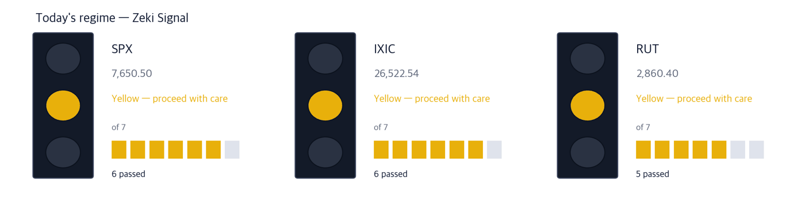
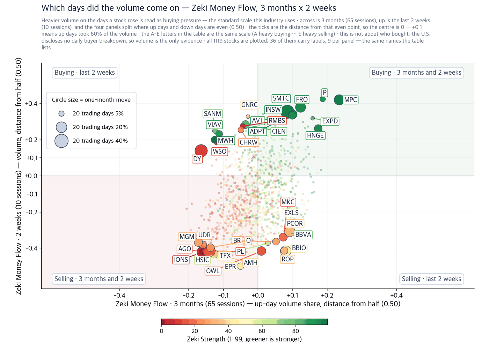
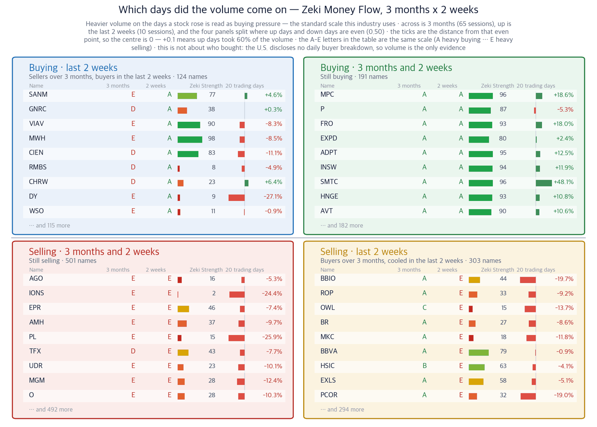

S&P 500 7,650.50 (+0.17%) | Nasdaq 26,522.54 (+0.39%) | Russell 2000 2,860.40 (-0.50%) | 10-year Treasury 5.00% | Zeki Signal Amber |

| The lit lamp | Today's phase. Green means buyers have the edge, amber means stand aside, red means hold off buying. |
| The filled blocks | How many of seven conditions the index passed. The more blocks, the sounder the market's structure. |
| All blocks filled but amber or red | Something else pulled the rating down a step. The reason is printed under the picture. |
| Date | What to watch | What it changes |
|---|---|---|
| Mon Sep 21, first 30 minutes | Whether the S&P 500 holds its September 18 close of 7,650.50 | If it does not, the next level below is the 50-day average at 7,617.24 |
| Mon Sep 21, close | Whether more than 360 stocks sit above their 50-day average | More, and the advance stops being the work of a handful of index names |
| Thu Sep 24 | The Trump-Xi meeting in Washington | If rare earths reach the agenda, semiconductor materials move first |
| Thu Sep 24 | August new-home sales | The first housing reading since the rate increase |
| Fri Sep 25 | Final University of Michigan consumer sentiment for September | Rising inflation expectations push Treasury yields back up |
Close $237.65 · Sep 18 -3.28% · week +14.95% · 20 trading days +24.9% · three months +38.8% · Zeki Strength 95 · Zeki Money three months B · two weeks B · 3.3% below its 52-week high Who a cloud security company · What subscriptions that defend corporate endpoints and servers · When through the September 18 close · Where inside U.S. corporate networks · Why because the paper documented AI succeeding at intrusion on its own · How larger subscription contracts land in the following quarter's revenue The stock gained 13.85% on September 14 alone. It rose on two of the four sessions that followed and gave back 3.28% on September 18. The week came to +14.95%. Volume on September 18 ran 1.96 times its 50-day average. Confirming signal — reclaiming the September 18 close of $237.65 and setting a new 52-week high. It sits 3.3% below that high now. Where it would be wrong — Zeki Money over the last two weeks slipping from B to below D, which would mean the buying has cooled. |
Close $363.58 · Sep 18 -3.06% · week +9.96% · 20 trading days +4.0% · three months +26.3% · Zeki Strength 93 · Zeki Money three months B · two weeks A · 8.2% below its 52-week high Who a corporate firewall and security company · What appliances and subscriptions that inspect traffic in and out of a company · When through the September 18 close · Where in U.S. corporate data centres and cloud estates · Why because AI used in attacks raises the volume of traffic that has to be inspected · How existing customers move up to higher tiers and revenue rises with them Zeki Money reads B over three months and A over the last two weeks. Buying led for three months and led harder in the last fortnight. Volume on September 18 ran 2.19 times its 50-day average. Confirming signal — the 20-day gain moving from 4.0% into double digits. Most of the three-month advance was built before the last 20 trading days. Where it would be wrong — giving back all of the September 14 gain and closing below that session's opening price. |
Close $112.45 · Sep 18 +2.53% · week +4.90% · 20 trading days +6.0% · three months +64.0% · Zeki Strength 93 · Zeki Money three months A · two weeks A · at its 52-week high Who a drug-delivery technology company · What technology that turns antibody drugs given by infusion into an injection under the skin · When through the September 18 close · Where layered onto other drugmakers' existing products · Why because shorter time in a clinic is what payers prefer · How a royalty arrives every time the partner's drug is sold Volume on September 18 ran 4.95 times its 50-day average. The stock closed the session at a 52-week high. It fell on only one day all week. This was not a single-session spike but a gain built over three sessions. Confirming signal — holding above $112.45, the September 18 close and its 52-week high. What matters is whether it keeps the price set on a day that drew five times the usual trade. Where it would be wrong — Zeki Money over the last two weeks slipping from A to below C. |
Close $56.87 · Sep 18 +0.71% · week +5.53% · 20 trading days +12.5% · three months +6.9% · Zeki Strength 91 · Zeki Money three months B · two weeks A · 3.7% below its 52-week high Who a mid-size biotech · What a treatment for relapsing multiple sclerosis · When through the September 18 close · Where in the U.S. neurology prescription market · Why because the drug is already approved and selling, so the value turns on prescriptions rather than on rates · How rising prescriptions show up directly in quarterly revenue The stock gained 5.30% on September 16, the day the Federal Reserve raised rates. Volume on September 18 ran 2.48 times its 50-day average. Zeki Money improved from B over three months to A over the last two weeks. Confirming signal — setting a new 52-week high. It sits 3.7% below that mark now. Where it would be wrong — giving back more than half of the 12.5% gain of the last 20 trading days. |
Close $194.25 · Sep 18 +11.66% · week +10.84% · 20 trading days +12.7% · three months +19.0% · Zeki Strength 27 · Zeki Money three months B · two weeks B · 49.8% below its 52-week high Who a digital-asset exchange · What the fee charged to everyone who buys and sells · When through the September 18 close · Where in the U.S. digital-asset trading market · Why because fees rise one for one with turnover · How an active quarter lands in revenue all at once The week swung hard. The stock fell 10.10% on September 15 and rose 11.66% on September 18. Zeki Strength is 27, which places it in the bottom third of the stocks we price. It trades 49.8% below its 52-week high. Confirming signal — Zeki Strength rising from 27 above 50. That number only moves if the wider group rises with it rather than one company alone. Where it would be wrong — surrendering the September 18 gain and closing below where the week opened. |
Close $119.82 · Sep 18 +9.12% · week +6.44% · 20 trading days +26.0% · three months +10.8% · Zeki Strength 67 · Zeki Money three months C · two weeks D · 21.4% below its 52-week high Who a retail brokerage · What the payment it earns for routing stock and digital-asset orders · When through the September 18 close · Where in U.S. retail brokerage accounts · Why because a crowded listing calendar brings more retail orders · How a higher order count raises quarterly revenue with it The numbers follow the story only halfway. The 20-day gain is a strong 26.0%. But Zeki Money fell from C over three months to D over the last two weeks. More volume arrived on down days than on up days. Confirming signal — Zeki Money over the last two weeks rising from D above B. Where it would be wrong — that grade staying at D while the September 18 gain is given back. |
| Company | The story | Why it is excluded |
|---|---|---|
| Netflix (NFLX) Excluded | A broker cut it to its lowest rating and took the price target from $80 to $57 | Zeki Strength 8, down 7.25% on the week, Zeki Money E over both three months and two weeks. Its trend measure is below zero |
| Alphabet (GOOGL) Excluded | The company at the centre of the report that Gemini hacked three companies during a test | Zeki Strength 60 and Zeki Money E over three months. Its trend measure is below zero, so it does not meet our entry condition |
| Boeing (BA) Excluded | NASA is in talks to give the Starliner spacecraft a new batch of missions | Zeki Strength 24, down 7.9% over 20 trading days and 5.82% on the week. Its trend measure is below zero |
| Theme | Company | Zeki Strength | Weight of evidence |
|---|---|---|---|
| AI security | CrowdStrike (CRWD) | 95 | Well grounded |
| AI security | Palo Alto Networks (PANW) | 93 | Well grounded |
| Biotech outside obesity drugs | Halozyme Therapeutics (HALO) | 93 | Well grounded |
| Biotech outside obesity drugs | TG Therapeutics (TGTX) | 91 | Well grounded |
| Listings and trading venues | Coinbase Global (COIN) | 27 | Grounded |
| Listings and trading venues | Robinhood Markets (HOOD) | 67 | Needs checking |
| Company | (1) up over 20 days | (2) Strength 90+ | (3) Money 3mo A-B | (4) 2 weeks not weaker | Met | Weight of evidence |
|---|---|---|---|---|---|---|
| CrowdStrike (CRWD) | O | O | O | O | 4/4 | Well grounded |
| Palo Alto Networks (PANW) | O | O | O | O | 4/4 | Well grounded |
| Halozyme Therapeutics (HALO) | O | O | O | O | 4/4 | Well grounded |
| TG Therapeutics (TGTX) | O | O | O | O | 4/4 | Well grounded |
| Coinbase Global (COIN) | O | X | O | O | 3/4 | Grounded |
| Robinhood Markets (HOOD) | O | X | X | X | 1/4 | Needs checking |
| Company | Zeki Money 3 months | Zeki Money 2 weeks | Sep 18 volume (vs 50-day average) | As of |
|---|---|---|---|---|
| CrowdStrike (CRWD) | B | B | 1.96x | Sep 18 |
| Palo Alto Networks (PANW) | B | A | 2.19x | Sep 18 |
| Halozyme Therapeutics (HALO) | A | A | 4.95x | Sep 18 |
| TG Therapeutics (TGTX) | B | A | 2.48x | Sep 18 |
| Coinbase Global (COIN) | B | B | 2.36x | Sep 18 |
| Robinhood Markets (HOOD) | C | D | 1.84x | Sep 18 |

| One dot | One stock. Its position across and up gives the two values directly, and the horizontal and vertical lines through the middle are the dividing lines. The label in each corner says what that quadrant means. |
| Dot size | The move over the last 20 trading days. A big move in either direction makes a big dot. |
| Dot colour | Zeki Strength. The greener the dot, the stronger that share price is against the market. |
| Only 30 named | Any more and the labels overlap. The rest cluster in the middle, where the moves are small. |

| What it does not say | It sets trading and price change over the same period side by side. It does not forecast. Over 21 years of U.S. data the four quadrants' later returns were indistinguishable from one another, and the gap between the best and worst grade was 0.03 percentage points — effectively nothing. So this is a picture of where things stand, not a place to buy or sell. Nor can it say who bought: the United States has no daily disclosure by investor type, so volume is all we have to infer from. |
| The four boxes | Whether each of the two values cleared its dividing line splits the field four ways. Top right cleared both, bottom left cleared neither, the other two cleared one. Each box's name states in a sentence what its stocks have in common. |
| The middle columns | These compare the two periods. A letter A to E is the industry-standard grade: A is strong buying, B buying ahead, C buying and selling even, D selling ahead, E strong selling (it is a rank split five ways, so A is the top fifth). A number is the amount bought less the amount sold over that period. |
| Nine per box | Ordered by the size of the move within that box. The count of the rest is printed beneath. These are the same nine the scatter plot labels. |
| The 20-day bars | Zero sits in the centre, gains run right and losses left. Compare bar lengths only within the same box — the scale differs from box to box. |
| Zeki Strength | A rank from 1 to 99. The longer the bar and the closer to green, the stronger that share price is against the market. |
| Weight of evidence | Names | Beat S&P 500 | Winners led by | Losers trailed by | All averaged |
|---|---|---|---|---|---|
| Well grounded | 18 | 14 / 18 | +5.12%p | -1.31%p | +3.69%p |
| Grounded | 7 | 4 / 7 | +3.65%p | -3.05%p | +0.78%p |
| Needs checking | 9 | 4 / 9 | +1.73%p | -1.24%p | +0.08%p |
| No basis | 3 | 0 / 3 | — | -1.00%p | -1.00%p |
| Excluded | 1 | 0 / 1 | — | -5.55%p | -5.55%p |
Of 18 Well grounded names, 14 beat S&P 500. Those 14 led by 5.1%p on average; the 4 that lost trailed by 1.3%p. All together: +3.7%p.
Toward the verdict. Across both markets, 24 of 60 cases have 5 trading days behind them. At 60 we run the test we fixed in advance, once, and print what it says. Until then the table above is interim.
| When | What | Why |
|---|---|---|
| Mon Sep 21, first 30 minutes | Whether the S&P 500 stays above its 50-day average of 7,617.24 | Below that line, the index has followed the stocks inside it down |
| Mon Sep 21, first 30 minutes | Whether the 10-year Treasury yield holds above 5.00% | Above that line the interest burden on smaller companies keeps rising |
| Mon Sep 21, last 30 minutes | Whether more than 378 stocks close higher | More means the advance has widened; fewer means the narrow run continues |